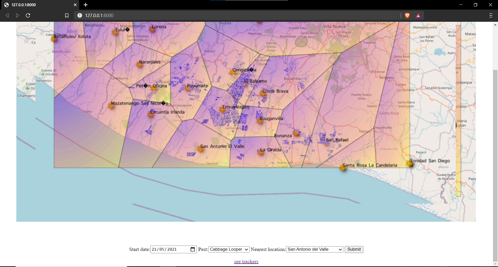
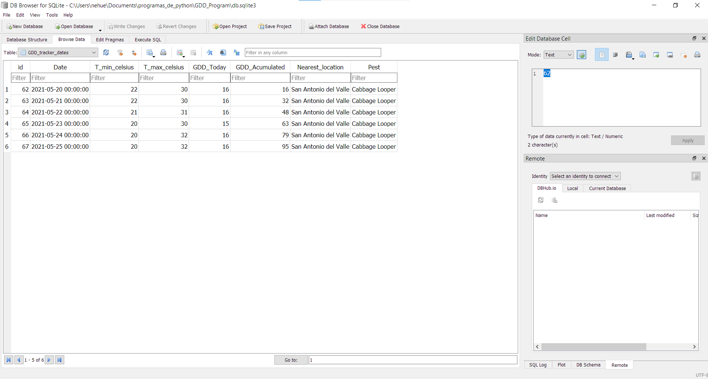
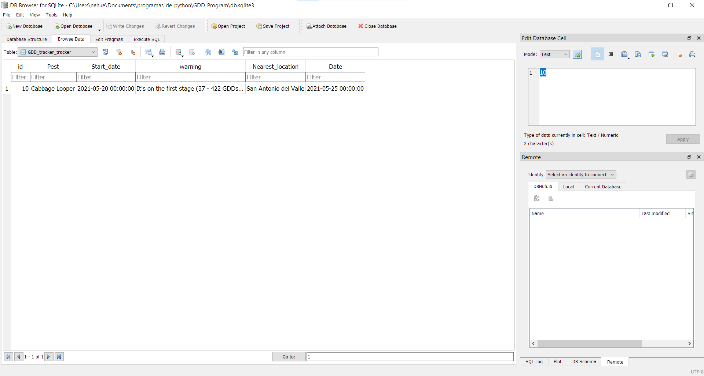

Growing Degree Days Tracker
This is a Django/Python based program for private use to control plagues in different farms from Guatemala, South America, where its main functionality is to calculate the growing degree days (A measurement used by farmers and gardeners to measure to growing speed of plants and plagues) acummulated between a certain date (specified by the client) and today, considering different parammeters, also specified by the client, such as the nearest weather location to the farm and the kind of plague they are having on it, showing the GDDs acummulated according to each day in a graph, so that they can take the best method to control the plague according to its growing stage.
The programm works this way: On the main page, the client submits the nearest location to the farm, the first day they saw any of the five different plagues and, finally, select the plague they are having on their farm using the dorpdown menu.
After submitting the data and going to the trackers page by clickig the "see trackers" link, the program will take all the parametters and according to the range of days between the start date and the current day will send it, day by day, to a one or other weather API (eiter a common weather API and the NASA's weather API) deppending on the date. All the data retrieved from the API for each day, such as the maximun and minimun temperature, the GDDs of that day and the GDDs accumulated by that day, is stored in a SQL data base, where the programm can access later.
 Once the trackers page loaded all the data, it is displayed on the page, also displaying the evolution of the GDDs throughout the time.

The client can add as many GDD trackers as they want, they'll always be available in the trackers page and will also update the information everyday when they open the page.
Skills used in this project
- Python Programing Language
- Django Framework
- SQL Programing language
- SQL Databases
- Usage of APIs